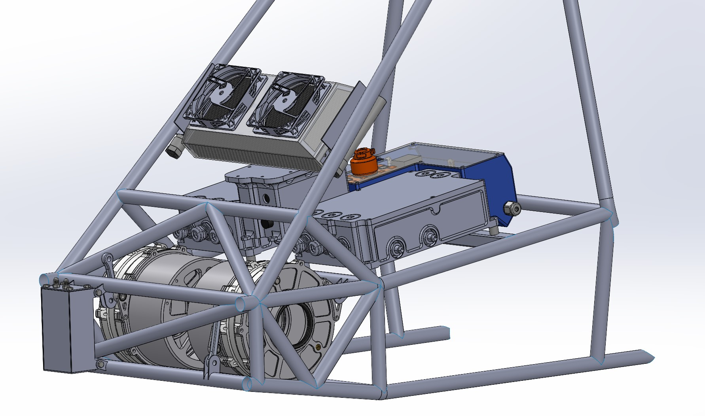

Project 03 · UBC Formula Electric
Drivetrain Liquid Cooling Loop
A liquid cooling system that removes an average of 806 W from a student FSAE car. It is tuned to hold component temperatures between 30 and 60 °C on an 80 kW peak drivetrain through the full Endurance event.
- Average heat load
- 806W
- Peak drivetrain
- 80kW
- Target temp
- 30–60°C
- Design flow
- ~15L/min
- Pump head
- 36.6psi

Requirements & layout
The most thermally demanding event at competition is Endurance: a 22 km drive with a driver change halfway. The challenge is keeping the motors and power electronics cool in Michigan's high ambient temperatures while keeping the cooling system light.
Two constraints set the component layout: the inverters need a high flow rate of 8–10 L/min, and the motors must not exceed 30 psi. I placed the motors in parallel to equalize their temperatures, so the left and right sides wouldn't drift apart in performance over time.
Heat generation
To analyze the vehicle's thermals and select a radiator, I took the speed/torque profile from the team's lap simulation and overlaid it with motor and inverter efficiency data. The result is the heat generated over a full lap.
Radiator testing
I sourced a radiator that looked like a good fit, but the data available for the radiators we could choose from was very poor. So I tested ours in-house in the university's wind tunnel, with a small group as a class project. We found the minimum wind speed needed to keep the components cool, which let me design a shroud around the radiator and size fans to pull air through it.
Pump & reservoir
With the other components chosen, I needed a pump that met every criterion we had set. That was hard because our low-voltage rail runs at 24 V, which is unusual for small BLDC pumps. The best option I found was a submersible pump, so it had to sit inside a reservoir.
Competition rules require a catch can to absorb thermal expansion. That worked in our favour: I made the case that the reservoir also served as the catch can, so we didn't need to design a separate one.
The total pressure drop before the motors is 11.6 psi. We run the motors at about 25 psi so they are never over-pressured, so the pump has to supply about 36.6 psi, or roughly 84 ft of head. On the chosen pump's curve that gives about 15 L/min, which leaves plenty of margin for minor losses in the fittings and hoses. The pump is also set by a physical potentiometer, so we can tune the system to the exact flow rate we want.
Validation
To validate the simulation, we had to test the system. We had planned endurance testing but couldn't gather the data we needed, so we validated with an autocross lap on a cold track day instead. Comparing heat generated with the measured temperature changes gave us the thermal mass of every component in the system.
From there we could plot each component's temperature and confirm that none ever exceeds its maximum, so the car can finish Endurance.